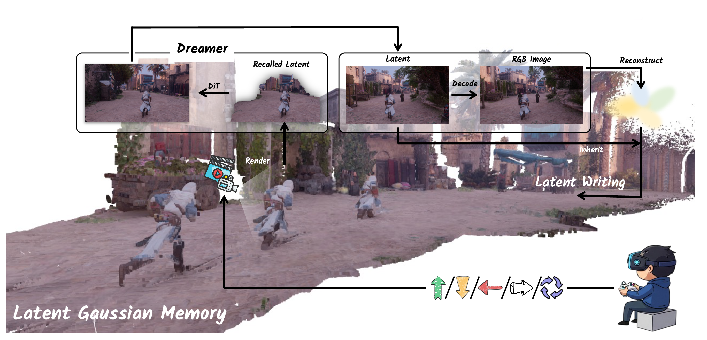
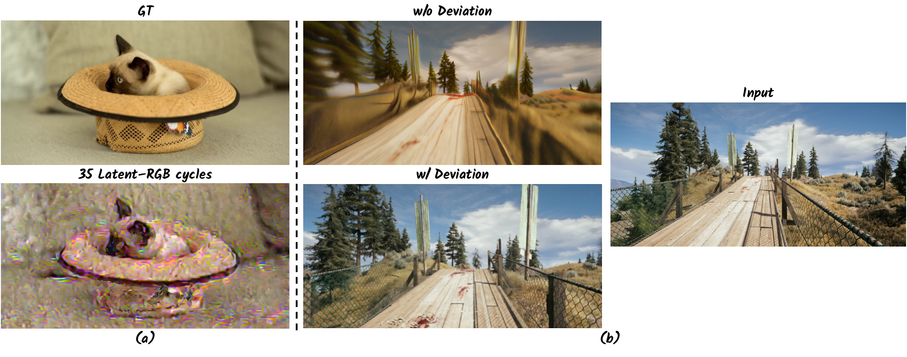
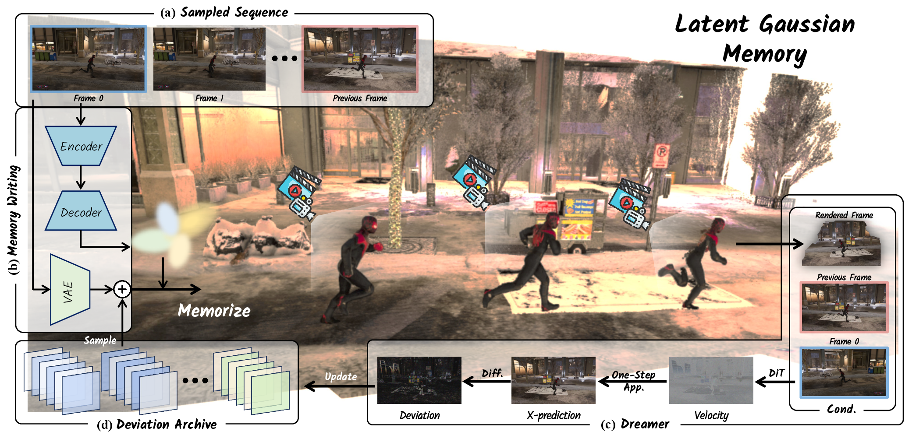
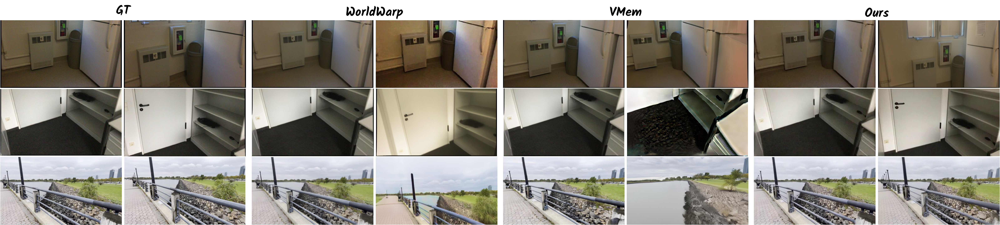
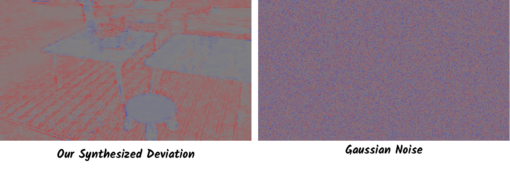

M
Latent Gaussian Memory
Stores generated diffusion latents on Gaussian primitives and recalls dense view-aligned latent features by splatting.
Robust Dreamer is a memory-augmented framework for frame-wise action-controlled video generation. It stores diffusion latents on Gaussian primitives and trains with rollout-like deviations to keep long autoregressive simulations visually faithful and 3D-consistent.

Frame-wise action-controlled image-to-video generation is a promising paradigm for interactive world simulation, where each control signal should elicit an immediate visual response. However, maintaining visual fidelity and 3D consistency over long autoregressive rollouts remains challenging. Existing 3D-aware methods often suffer from catastrophic drift due to two impediments: information loss from Latent-RGB Cycling, where generated latents are repeatedly decoded to RGB and re-encoded for future conditioning, and the training-inference gap induced by the error-free hypothesis, where clean training memory fails to match prediction-corrupted inference memory. Robust Dreamer addresses these issues with Latent Gaussian Memory, which anchors inherited diffusion latents to Gaussian primitives and recalls them via latent-space Gaussian splatting, and Deviation Learning with Dynamic Deviation Archive, which trains the generator on realistic rollout-induced memory corruption. Experiments on ScanNet, DL3DV, and OmniWorldGame demonstrate state-of-the-art long-horizon performance.
Long-horizon autoregressive generation is vulnerable to compounding errors. Repeated latent-to-RGB-to-latent conversion progressively damages fine details, and clean training memories do not match the corrupted memories produced by the model's own predictions at inference time.

The framework maintains a persistent Latent Gaussian Memory during inference and uses a Dynamic Deviation Archive during training. The memory provides geometry-aware latent conditioning for future views, while deviation learning teaches the Dreamer to denoise from imperfect historical context.

Stores generated diffusion latents on Gaussian primitives and recalls dense view-aligned latent features by splatting.
Indexes synthesized rollout deviations by autoregressive stage and denoising timestamp to model non-stationary errors.
Conditions each next-frame prediction on the clean anchor, predecessor latent, recalled memory, and action control.
Robust Dreamer is evaluated on ScanNet, DL3DV, and OmniWorldGame with pixel fidelity, perceptual quality, and distribution realism metrics. It preserves appearance and geometry more consistently over long horizons than autoregressive and memory-based baselines.

Indoor long video sequences test robustness under continuous camera motion and complex room geometry.
Diverse real-world scenes evaluate generalization across larger viewpoint changes and appearance variation.
Interactive game-style trajectories stress long-horizon control and dynamic scene consistency.
The Dynamic Deviation Archive stores model-induced latent errors instead of injecting unstructured random noise. These deviations capture structured rollout artifacts, such as edge blur and geometry drift, and improve the generator's ability to correct corrupted memory states.

@article{chen2026robustdreamer,
title = {Robust Dreamer: Deviation-Aware Latent Gaussian Memory for Action-Controlled AR Video Generation},
author = {Chen, Hanlin and Wei, Jiaxin and Song, Xibin and Wang, Yifu and Wang, Steve and Li, Hongdong and Ji, Pan and Lee, Gim Hee},
year = {2026}
}We thank NYU VisionX for the project page template, which was adapted from Cupid.